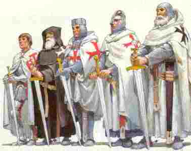

An tri manac'h ruz
Barzhaz Breizh
Ton
|
1. Krenañ ran em izeli, krenañ gant ar c'hlac'har,
O welet ar gwalleurioù a sko gant an douar: O soñjal d'an taol euzhuz, zo nevez c'hoarvezet War-dro ar gêr a Gemper, ur bloaz zo tremenet. 2. Katellig Moal, gant an hent, o lavar ur c'houplat Degoue'et ganti tri manac'h hag i harneset mat; Hag i war o c'hezeg bras harneset a bep tu, Degoue'et ganti, kreiz an hent, degoue'et tri manac'h ruz. 3. - Deut ganeomp d'al lean-di, deut ganeomp, plac'hig koant, Eno na vanko deoc'h-hu nag aour, vat, nag argant - Salokras, va aotrounez, ganeoc'h na in ket-me, Aon em eus rak ho kleze, zo 'stribilh d'ho kostez 4. - Deut ganeomp-ni, plac'h yaouank, n'ho pezo droug ebet - Na in ket, va aotrounez, gwall draoù a ve klevet ! - Gwall draoù a-walc'h ve klevet gant an dud milliget Mil mallozh d'ar gwall deodoù, da gement zo er bed ! 5. Deut ganeomp-ni, plac'h yaouank, peus ket kaout aon ebet. - Na in ket feiz, ganeoc'h-hu; gwell ve din bout devet ! - Deut ganeomp d'al lean-di, ni ho lakay 'n ho aes. - Na in ket d'al lean-di, gwell eo din chom er-maez; 6. Bet zo bet ennañ, glevan, seizh plac'h diwar ar maez. Seizh plac'h koant da zimeziñ, ha n'int ket deut er-maez. - Mar zo bet ennañ seizh plac'h, c'hwi a vo an eizhvet !- Hag i d'he zaol war o marc'h, hag i kuit en ur red; 7. Hag i kuit trezek o c'hêr, hag i kuit en ur pred, Ar plac'h a-dreuz war ar marc'h, he beg dezhi mouget. Hag a-benn seizh pe eizh miz pe 'n dra bennak goude, I a oe souezhet bras 'barzh an abati-se; 8. Hag a-benn seizh pe eizh miz pe 'n dra bennak goude: - Petra raimp-ni, va breudeur, deus ar plac'h-mañ breme ? - Boutomp hi 'n un toull douar.- Gwell ve dindan ar groaz. - Gwell ve c'hoazh mar ve lakaet dindan an aoter vras. 9. - Na deomp henoz d'he lakaat dindan an aoter vras E-lec'h na zeuio nikun diouzh he c'herent d'he c'hlask.- Tro mare sarras an deiz, an neñv holl da frailhañ ! Glav hag avel ha grizilh, ha tan-foeltr ar gwallañ ! 10. Hogen ur paour-kaezh marc'heg, ha glebet e zilhad, Oa o vale diwezhat, ar glav oc'h e bilat; O vale dre-se o klask en tu bennak un ti, Hag eñ dont da zegouezet, gant iliz 'n abati. |
11. Hag eñ monet da sellet etre toull an alc'houez,
Ha gwelet ur goulouig a oa c'hwe'et aze; Hag an tri manac'h a-gleiz, o toullañ 'n aoter vras, Hag ar plac'h war e c'hostez, staget he zreidig noazh. 12. Ar plac'hig paour a glemme, goulenne forzh truez: - Laosket ganin va buhez, aotrounez, an' Doue ! Aotrounez, en an' Doue, laosket din va buhez, Me a valo deus an noz ha guzho deus an deiz.- 13. Ken a varvas ar gouloù, ur boutadig goude, Hag eñ da chom toull an nor, hep fichal, spontet tre. Ken a glevas ar plac'hig, en he bez o tamant: - Me garfe d'am c'hrouadur eoulioù ar vadiant; 14. Ha goude ar groaz-nouenn evidon ma unan, Ha mervel a rin laouen a galon vat bremañ. - Aotrou eskop a Gernev, dihunet, dihunet; C'hwi zo aze 'n ho kwele war ar bluñv blot kousket; 15. C'hwi zo aze 'n ho kwele, war ar bluñv blot-meurbet, Hag ur plac'hig o tamant 'n un toull douar kalet, O c'houlenn d'he c'hrouadur eoulioù ar vadiant, Ha goude ar groaz-nouenn eviti hec'h-unan.- 16. Toullet oa an aoter vras, dre urzh an aotrou kont, Ha tennet 'maez ar plac'h paour, an eskop o tigont Ha tennet ar plac'hig paour er-maez deus an toull don, Ganti he mabig bihan, kousket war he c'halon. 17. Debret he doa he divrec'h, didammet he divronn, Didammet he divronn wenn bete poull he c'halon. Hag an aotrou an eskop, pa welas kement-se, 'N em strinkas war e zaoulin, da ouelañ war ar bez. 18. Teir noz, tri deiz, e chomas e-touez an douar yen, Gwisket gantañ ur sae reun hag e dreid diarc'hen. Hag a-benn an deirvet noz, an holl venec'h eno, Teuas da fichal ar bugel, etre an div c'houloù, 19. Da zigor e zaoulagad, da gerzhet war un dro, Kerzhet d'an tri manac'h ruz : - An tri-mañ 'n hini-eo !- En tan emañ int bet devet, hag en avel gwentet; Ho c'horf lakaet da zamant, en abeg d'o zorfed. |
Variantes tirées du premier carnet de collecte de La Villemarqué

|
p.178
2. Tri torfetour yaouank o tont deus-a Wened Deut ur femelenn yaouank he-deus he chapeled: Enor da Santez Ana n'he-deus he laret. 3.1 Deuit ganeomp-ni, plac'h yaouank, d'ar c'hovent, Eno na vanko d'eoc'h-hu nag aour nag arc'hant 8.1 Pa oa deuet an eizhved miz lar 'n eil d'an egile: - Petra reomp-ni, va breudeur, deus ar plac'h yaouank-se? 9.1 Lakomp hi 'dan ar groaz, 'dan an aoter vras E-lec'h ne zei nikun deus he ligne d'he c'hlask. 10.1 Benn ur boutad goude-se ur mac'hadourig paour O tremen en iliz-se... A. N'en-doa ket an arc'hant da paea e loje, Gant aoñ da chom er-maes, eñ a ae d'an ilis. A. Il n'avait pas de quoi payer l'auberge: De peur de coucher dehors, il alla à l'église. A. He couldn't afford to stay overnight at the inn. Lest he would sleep out of doors, he went to the church. 13. Ha pa zonas hanter-noz, an goulou a varvaz Hag ar marc'hadourig paour spontet-bras a jomaz. 8.1 Pa zonas hanter-noz pe un dra-bennag goude, 13.2 Eñ gleve ar plac'h yaouank en he bez o tamant. O c'houlenn d'he c'hrouadur eoul ha badeziant 14.1 Hag ivez dezhi he-unan an oen ar sakrament. 13.4 - Me garfe kaoud d'am mab-krouadur eoul ha badeziant 14.1 Hag ar groaz hag an oen evit me-unan Ha mervel a rin souden gant plijadur bremañ. B. Ar marc'hadourig paour pa glevas kement-se Eaz da gaout ar person an e... B. Le pauvre marchand, entendant cela, Alla trouver le curé de... B. Hearing as much, the poor stallholder Went to the vicar of... 17.1 Debret he-doa he daou vrec'h hag he dorn Debret he-doa he div vron beteg toull he c'halon. P. 299 |
14.4 - C'hwi zo,
aotrou person
, n'ho kwele kousket mat
Ha me marc'hadourig paour me zo war ma daoudroat 15.2 Du-mañ zo ur femelenn hag en he bez o tamant, O c'houlenn... C. Hi a zo bet interet gant tri manac'h yaouank. c. Elle a été enterrée par trois jeunes moines. C. She was buried by three young monks. 17.2 Hag an aotrou person pa glevas kement-se Chomas tri deiz ha teir noz da ouela war he bez. P. 298 3. - Deut-hu ganeomp d'an abati, deut-hu ganeomp plac'h yaouank Eno na vanko d'eoc'h-hu nag aour nag an arc'hant - Salhokras, aotrounez, salhokras, nez in ket Aon am-eus deus ho kleze, zo 'istribilh 'n ho c'hoste! 4.1 - Deuit ganeomp, plac'h yaouank, n'ho pezo drouk ebet- 5.2 - N 'ez' in ket, aotrounez, gwell ve din bout devet. 6.1 Bet zo bet 'n abati seizh plac'h diwar ar maes Seizh plac'h, ken yaouankik, ha n'int ket deuet er-maes. - Mar zo bet seizh d'an abati c'hwi vo 'n eizhved. Ne oa ket e c'homz gantañ peurlavaret 7.2 Pa oa war lost ar marc'h du ha i d'ar ger degouet Ha mouchet dezhi he beg p. 300.1 8.1 Benn un tri pe pevar deiz, un dra bennag goude Eont o zri souezhet e-barzh ar govent-se 8.2 Hag ali.. tri larent 'n eil d'egile "Petra reomp-ni deus ar plac'h-mañ? Interomp-hi dindan an aoter vraz. P. 300.2 10.1 Ur marc'hadourig paour o voned gant an hent Biskoazh ken souezhet ne voa bet gwelet ur sort torfed. 12.1 Ur plac'h paour a grie forzh he buez Lezit ganin va buez! Me valo deuz an nozh ha guo -kreizh an deiz. D. Ar marc'hadourik paour, benn tri deiz goude-se. O tremen tall an iliz a glevas adarre. En he tomb o tamant &... Ha maes ye bremañ souden... koutant... - Marc'hadourik, red vo gout an tri dorfet-se Marc'haroudik, emezhan, c'hwi vo an tad paeron Hag ar c'hoar marc'had...a vo ar vamm baeron. - - Marc'hadourik, emezan an tri-mañ, an tri z'eo? |
- O nann, o nann, emezhañ, ne ket re-se n'eo.
Pa oa degaset dehañ, tri all neuze - Ho ya, ho ya, emezhañ, an tri-mañ an tri z'eo! D. Le pauvre marchand, trois jours plus tard En passant devant l'église l'entendit à nouveau Dans sa tombe qui se lamentait... Et il se précipita dehors...content... - Marchand, il faudra reconnaître ces trois crim[inels]. Marchand, c'est vous qui serez le parrain Et la soeur du march... sera la marraine. - - Marchand, dit-il, sont-ce ces trois-là? - Oh non, oh non, dit-il, ce n'est pas eux. Puis on lui en amena trois autres... - Oui, oui, dit-il, c'est bien ces trois-là! D. The poor stallholder, three days later, On passing before the church heard it again In her tomb and was lamenting &... He hurried out ... satisfied... - Stallholder, you must recognize these three murderers. Stallholder, he said, you shall be the godfather And your sister shall be the godmother. - - Stallholder, he said, are there these three? - O no, o no, he said they are not. Then another three were brought to him... - Yes, yes, he said, these three are the murderers! P.301 19.2 En tan e oant bet rostet, en a'el e ont gwentet. O c'horf oa lakaet damant, o c'horf vit o pec'hed. p.299, marge g. 16.4 En e dorn ur gouloù; ar bugel oa marv, 18.3 Ha d'ar benn an trede noz an holl menec'h eno. Etre an div gouloù 'teu da fichal, 'teu da fichal un tammig, 19.1 Ha da zigor e zaoulagad, ha kerzhed war an dro, Ha kerzhed d'an tri dorfedour: "An tri-mañ , ar re z'eo! Ez eo!" p. 298, marge d. 16 Digoret a oa an iliz dre urzh an aotroù kont Ha toullet an aoter vras, an eskob o tigont Tenet maes...ha kavet ar vamm paour Ha ganti he mab bihan kousket war he galon. 17.3 Hag an aotroù an eskob pa welaz kement-se Eñ kouaz war e zaoulin 'n ur ouela war ar bez, 18.1 N'em stouas war he zaoulin o toues an douar yen, Gwisket gantan ur zae gwenn hag e zreid digeriet. |